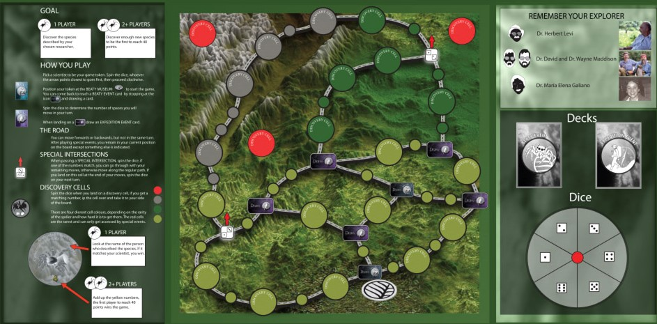

As part of my research, I had the opportunity to coordinate and be leader of a month's expedition to Mexico, where I coordinated with local scientists, governmental entities and private landowners. We discovered more than 20 species of jumping spiders new to science during that fieldtrip.
In association with the Beaty Museum, we developed a board game that teaches people about the wonders of discovering new species, and we used it during our expeditions to engage public in general to the activities we were performing at their localities, forming strong connections with people.

I think of the kids coding workshop as our main collective contribution to Let's Talk Science. A group of enthusiast programmers (myself included) from UBC joined together and developed the LTS coding club to deliver engaging content in python to teach children from ages 8 to 16 how to code. We used a diverse repertoire of tools for the task, including python turtle, trinket, Microbits and custom scripts. It was really fun.
We hosted three main sessions between 2017 and 2018, all in association with the Vancouver School Board. The first code club happend at John Oliver Secondary Highschool for all children, as a form of afterschool workshop. Because of its success, I became coordinator of the coding club, and we hosted a second workshop at the UBC Learning Exchange Centre, a decision we made based on how underrepresented girls were in our original workshop.
I had the unique opportunity to interview and be editor of Dr. Gonzalo Giribet's career profile in the Lets Talk Science Portal, who is currently Director of the Museum of Comparative Zoology at Harvard University, its main curator, and also an exceptional researcher.
Let's Talk Science hosted many special events at Telus Science World. I contributed by coordinating a stand teaching children about genetics by precipitating DNA from a smashed fruit and ethanol. Really fun!
I developed special online and interactive games based on JS to remotely assist teachers' sessions during COVID-19, which I also hosted in the Keats Island Conservation Group website, for which I'm the main developer.
Other sessions included presenting the class a live view of marine life using my microscope and a modified version of GoPro mounted to ElGato Camlink, casting jewels in epoxy resin, and making slime.